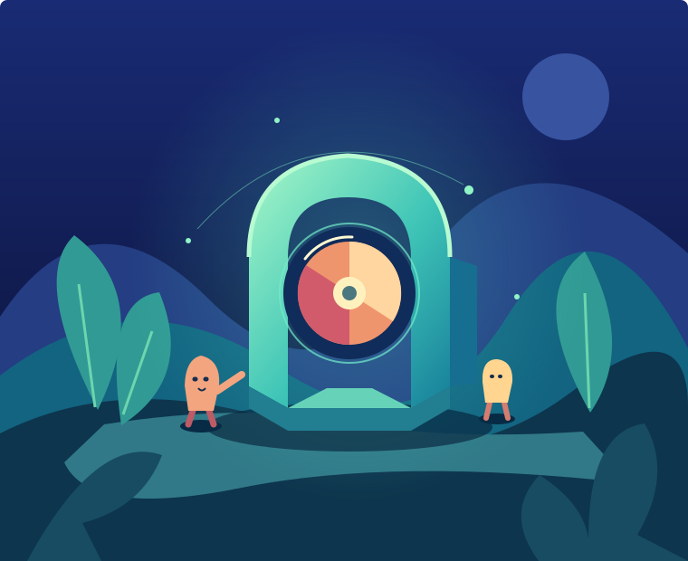

01 / DEPTH
Layer the world.
A foreground opening, an action plane and a distant environment. Keep the contours crisp where the explanation happens.
LUMINOUS WORLDS / ILLUSTRATED SCIENCE
Step into a richly drawn world. Follow its characters, look inside its mechanisms, and see an idea come to life.
ILLUSTRATION + PERFORMANCE + PURPOSEFUL LIGHT

01 / THE SCREENING ROOM
02 / THE VISUAL LANGUAGE
01 / DEPTH
A foreground opening, an action plane and a distant environment. Keep the contours crisp where the explanation happens.
02 / PERFORMANCE
A glance before a reach. A pause after contact. Characters and props move independently of the scenery.
03 / LIGHT
Deep indigo gives a luminous mechanism room to speak. Warm focal forms and pale highlights guide the eye.
03 / INSIDE THE COMPOSITION
Build the setting, stage the action, then shape the light. Switch between the layers to see what each contributes.
INTERACTIVE STYLE STUDY · NO AUDIO
04 / MAKE IT YOURS
Natural processes, hidden systems and mechanisms all benefit from a visible cause and effect.
Give your subject its own environment, visual metaphors and actions. Keep narration, camera and sound on one timeline.
Inspect full scenes and transitions. Use every-frame diagnostics to locate issues, then judge motion and sound in playback.
YOUR NEXT FILM STARTS HERE
Open this repository in your Agent and ask it to create a Luminous Worlds film about your topic, in an independent project.
The toolkit supplies visual rules, geometry and timing helpers, and frame-review tools. New scenes and sound still need to be authored. Recreating a sample requires its editable sources.
05 / HOW THE FILM IS BUILT
A held object follows the hand. A moving subject keeps its ground contact. Scale changes preserve its identity.
Shape musical sections around the story. Let sound effects land on visible events, and leave space for the voice.
Frame scans reveal outliers. Playback reveals timing. Listening reveals the mix. Keep these findings distinct.
06 / ROOTS & REFERENCES
This style combines original illustration and procedural animation. References inform its visual language; each production owns its story and source ledger.